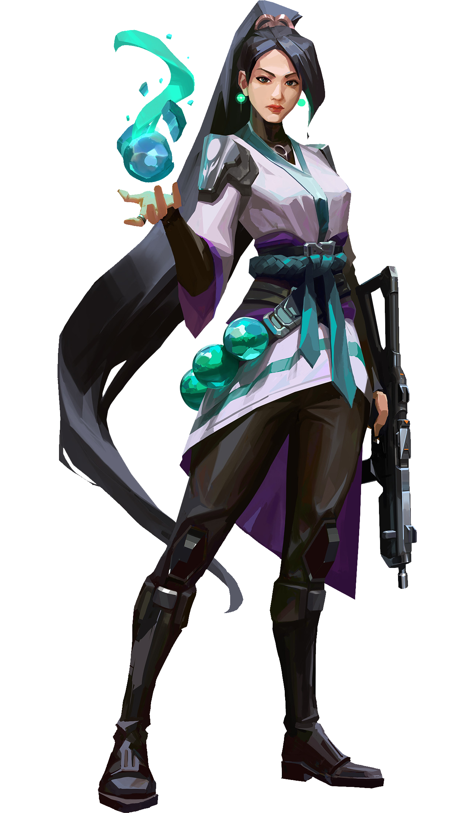

Sage
Sentinel
The stronghold of China,
Sage creates safety for herself and her team wherever she goes.
Able to revive fallen friends and stave off aggressive pushes,
she provides a calm center to a hellish fight

Skills
SLOW ORB
EQUIP a slowing orb.
FIRE to throw a slowing orb forward that detonates upon landing,
creating a lingering field that slows players caught inside of it.
COST: 100 , Charges: 2
HEALING ORB
EQUIP a healing orb.
FIRE with your crosshairs over a damaged ally to activate a heal-over-time on them.
ALT FIRE while Sage is damaged to activate a self heal-over-time.
COOLDOWN 45 Seconds
BARRIER ORB
EQUIP a barrier orb.
FIRE places a solid wall.
ALT FIRE rotates the targeter.
COST: 300
RESURRECTION
EQUIP a resurrection ability.
FIRE with your crosshairs placed over a dead ally to begin resurrecting them.
After a brief channel, the ally will be brought back to life with full health.
COST: 7 points